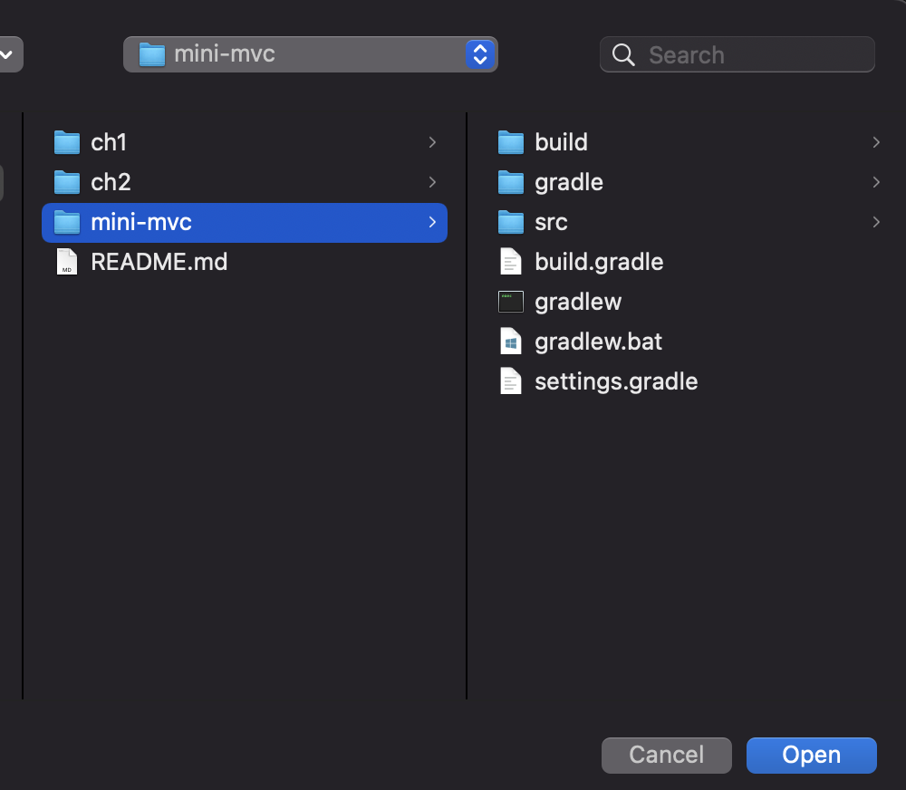
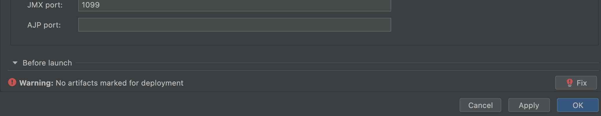
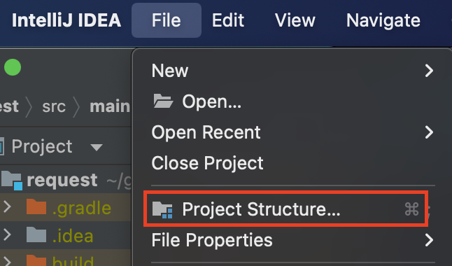
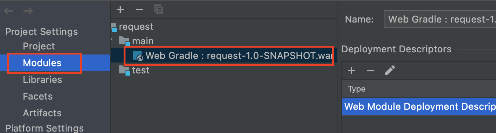
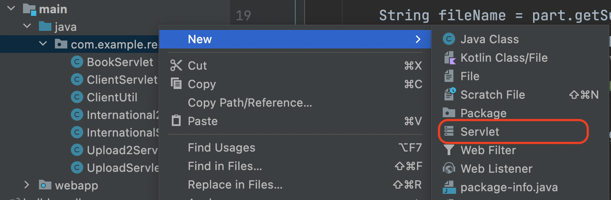

IntelliJ IDEA
IntelliJ IDEA, developed by JetBrains, is an integrated development environment (IDE) written in Java for developing computer software, and it is undoubtedly the top-choice IDE for software developers. It provides two major editions (i.e., Ultimate and Community), and IntelliJ IDEA Ultimate aims for web and enterprise development. Although Ultimate edition is a paid software, it allows students and teachers to apply for free educational licenses.
Step 1: Create a JetBrains account. Go to https://account.jetbrains.com/login. Although not required, you'd better create an account using your edu email address.
Step 2: Apply for educational licenses. Go to https://www.jetbrains.com/community/education and click the Apply now button. Then fill in the forms as required. When everything is done, you shall receive an email from JetBrains for verifications.
Step 3: Download and install IntelliJ IDEA Ultimate. Go to https://www.jetbrains.com/idea/download and download packages according to your own operating system. After downloaded, double click the installer, and then it is fine to always click next and use the default settings. When finished, open the IntelliJ IDEA Ultimate application, and then activate the free access using your JetBrains account created in Step 1.
If all goes well, you shall see the welcome screen of IntelliJ IDEA Ultimate, as depicted in Figure A.2.

How to import project to IntelliJ IDEA
The sample code of this book in GitHub is managed by Gradle, and here is a quick tutorial of how to import Gradle project to IntelliJ IDEA[1].
Suppose that the project has been downloaded to your computer. Click File | Open at the menu, and then select the upmost folder (e.g., mini-mvc) containing gradlew (or gradlew.bat):

It may take a few seconds for the first time since it has to download some dependencies from the remote repository and IntelliJ IDEA has to build index for this imported project.
After importing, we need an extra work to make it runnable. To be specific, click Run | Edit Configurations... in the menu, and then click Add new... in the pop-up Run/Debug Configurations window, select Tomcat Server | Local. Now you will find there is a warning:
[!WARNING] Warning: No artifacts marked for deployment
No worry, click the Fix button.

And you can select one of two items in the Select an artifact to deploy pop-up windows.
By the way, the repository in the GitHub, by default, can be only downloaded as a whole as a .zip file[2]. But sometimes, we would like to download a single project. Luckily, there are a few tools created by the community that can do this for you. See more at Download a single folder or directory from a GitHub repo.
How to new a servlet
Sometimes, you may not find the servlet (and listener) template when trying to new a file in Intellij IDEA, and this is because the src/main/java is not marked as the source root.
- Step 1: Click
File | Project Structure.

- Step 2: Make the
Source Rootsas being marked underModules | Web Gradle xxx.war.


Click OK button. Then, finally, you shall see the servlet template when trying to new file.

Of course, those steps are totally optional, because it is fine to create a plain Java class and then make it extend HttpServlet manually. But creating a servlet from the template can be handy for beginners.
[1] Those steps are the same for projects managed by other tools, such as Maven and SBT.
[2] Of course, life would be easier if you get used to git.